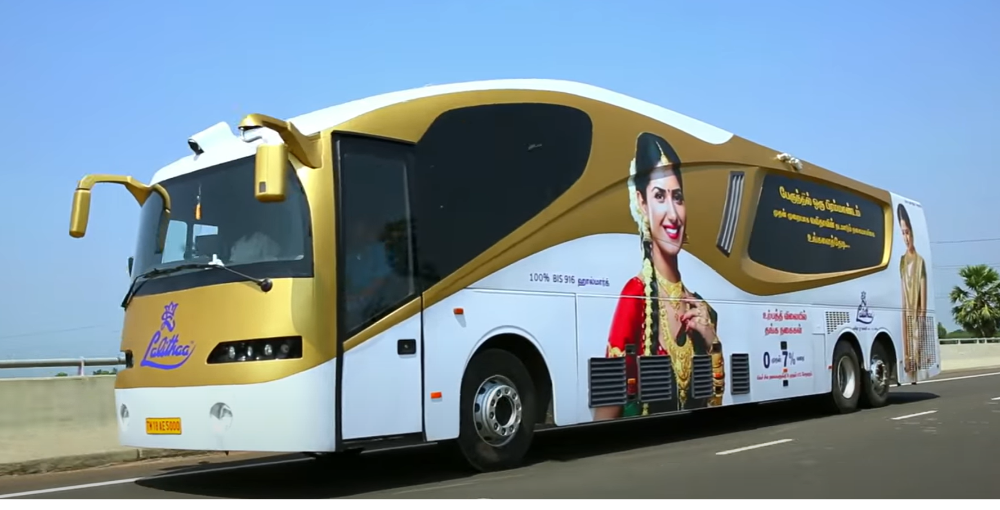

Mobile Jewellery Shop - Lalithaa
Disclaimer: Most of what I talk about below - are my observations from Southern parts of India, and might not be applicable to Northern parts, which I am not very familiar with.
Lalithaa Jewellery seems to have introduced a mobile jewellery shop in the form of a modified long chassis bus. I think this is a darned good innovation. There used to be a time when the predominant way of doing jewellery was to go to a jewellers shop, where you discuss patterns, weight, wastage etc, and then the jeweller would custom make it for you.
Some of these jewellers in Tier 1 towns (such as NAC etc), who had access to capital and fast business movement, had 'some' 'readymade' stuff - things such as small silver tumblers, chains, rings etc - which are mostly impulse buys. In recent times, large box format stores (mostly chains which have large capital) have started making their presence (Malabar, Jos Alukas etc). These stores started off in Tier 1 cities, and now started slowly moving towards Tier 2 towns as well. Accessibility to 'readymade jewels' is significantly improved because of this. A 'trip to the city' is usually saved.
While accessibility is improved, it is not economical for these large format stores to go to every Tier2 and Tier3 towns. I think this is the market that Lalithaa is targeting. For some context, Lalithaa is one of those hybrid stores, which does some custom jewellery, but has predominantly large inventory of pre-made jewels. This bus looks to be a modified shell with a proper jewellery shop facade, counters, staff etc inside. The bus is now stationed in Theni (a Tier 2 town in the border of TN and Kerala), in a fair ground.
These large box stores do a ton of advertising on main stream cable/satellite TV - whose penetration in India has just exponentially risen in the last decade (next only to telecom). With the brand visibility already present, with the store coming to you, I think it is a novel technique to increase the reach.
Couple of feature-y things that come to mind -
- Some rough schedule of the bus (perhaps a loop), so that folks in towns know when the next bus would be here next. Maybe even a call center or recorded info about the bus whereabouts.
- Some form of demand capture - phone perhaps, (and in the long run through learning from data).
If this is successful (or not), I see this as a model that should be tried across other verticals too. Very interesting. #SolveForBharath Watch their youtube video here